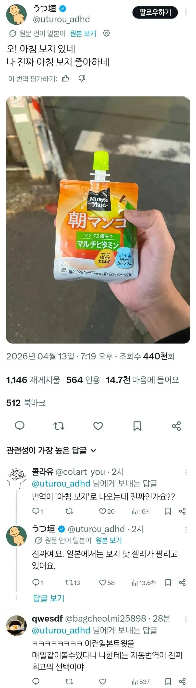

망꼬 = 보지
칭꼬 = 자지
여성의 음모를 뜻하는 '만게

망꼬 = 보지
칭꼬 = 자지
여성의 음모를 뜻하는 '만게
응 팥고물 응 있고...
알아보는 내가 싫다
망개는 발기가 아니다 게이야
ㅇㅋ수정했으
망개는 뷰지털 아님?
발기는 보키 & 보끼
아아 수정했으
근데 망고는 일본어로 뭐임?
일본어로도 망고임 사진에 오른손 엄지로 가린부분에 점 두개 박혀있을거임 원래는 ㅋㅋㅋ
사쿠라네
망고 マンゴ
보지 マンコ
그래서 손가락으로 가렸구나 ㅋㅋㅋ
망게떡~
나도 아침보지 좋함. 또 다른 조아하는 걸로는 점심보지와 저녁보지가 있음.
야식은 안좋아함??
새참보지
벚꽃이 망게 ㄷㄷㄷ
망개~~~떠억~~~~
일본어는 탁점이 빠지면 큰일난다
망고랑 망코 차이인데 걍 지멋대로 돌려버리나 ㅋㅋㅋㅋㅋㅋ
걍 저 일본인이 일부러 망꼬라고 적어놔서 보지로 번역되는거
오늘부터 수박을 몽미라 불러야지 같은거임
잠 덜깨어있을때 모닝떡이 ㅈ되긴해


아뇨 망고말고 보지 맞아요ㅎㅎ
일부러 망코라고 쓴건가
오망코
음~ 해산물 향 젤리
망개떡
아사망꼬 좋긴하지